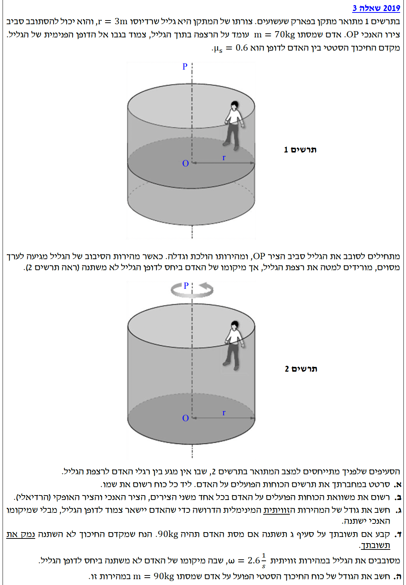
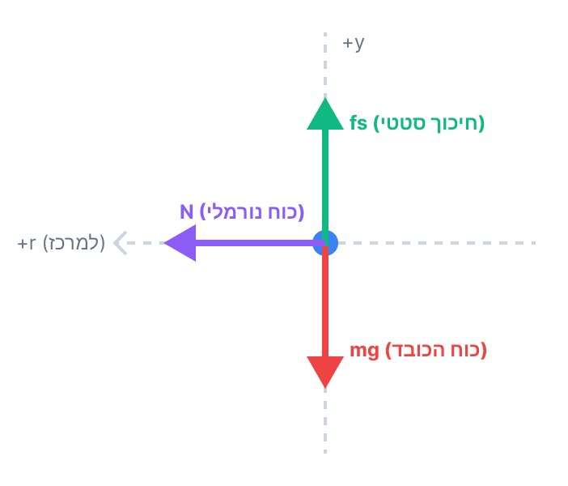

פתרון מלא ומודרך מלווה בהסברים צעד-אחר-צעד

שימוש בעקרונות הדינמיקה להבנת הכוחות: כוח כבידה הפועל כלפי מטה, כוח נורמלי הפועל במאונך למשטח (הדופן), וכוח חיכוך סטטי הפועל במקביל למשטח ומונע החלקה.
נסרטט את האדם כנקודה חומרית (מסה נקודתית) ונסמן את הכוחות הפועלים עליו. נבחר מערכת צירים: ציר אופקי \( x \) (כיוון רדיאלי, חיובי למרכז המעגל) וציר אנכי \( y \) (חיובי כלפי מעלה).

החוק השני של ניוטון: \(\Sigma F = ma\). תאוצה רדיאלית: \(a_R = \omega^2 R\). בנוסף, עקרון אי תלות בין צירים (התנועה בציר האנכי אינה משפיעה על המשוואות בציר הרדיאלי).
נפרק את משוואת הכוחות לשני צירים:
ציר \( y \) (אנכי): האדם אינו נע מעלה או מטה, ולכן התאוצה בציר זה היא אפס (\( a_y = 0 \)). לפי החוק הראשון של ניוטון:
ציר \( x \) (רדיאלי): האדם מבצע תנועה מעגלית, לכן יש לו תאוצה רדיאלית המכוונת למרכז המעגל. הכוח היחיד הפועל בציר זה הוא הכוח הנורמלי. לפי החוק השני של ניוטון:
תנאי אי-החלקה (חיכוך סטטי): \(f_s \le \mu_s N\). עקרון: במצב קיצון של סף החלקה (כאשר נדרשת מהירות סיבוב מינימלית), כוח החיכוך הסטטי מגיע לערכו המקסימלי האפשרי.
כדי שהאדם לא ייפול, כוח החיכוך הסטטי \( f_s \) צריך לאזן את כוח הכובד הפועל עליו, ולכן גודלו קבוע וחייב להיות שווה ל- \( mg \). במקביל, כוח החיכוך המקסימלי האפשרי מוגדר על ידי הנוסחה \( f_{s,max} = \mu_s N \), והוא תלוי במקדם החיכוך (שהוא קבוע) ובכוח הנורמלי.
ככל שמהירות הסיבוב \( \omega \) קטנה, כך גם הכוח הנורמלי \( N \) קטן, וכתוצאה מכך קטן גם הערך של כוח החיכוך המקסימלי. הנקודה הקריטית, שמתחתיה האדם יחליק מטה, היא בדיוק הרגע שבו כוח החיכוך המקסימלי שווה בדיוק למשקל האדם \( mg \). לכן, נחפש את המצב בו מתקיים השוויון:
נציב את הביטוי עבור הכוח הנורמלי \( N = m \omega^2 r \) (שמצאנו בסעיף ב'):
נצמצם את המסה \( m \) משני אגפי המשוואה ונקבל:
נבודד את המהירות הזוויתית \( \omega \) כדי למצוא את המהירות המינימלית:
כעת, נציב את הנתונים המספריים:
נעגל ל-3 ספרות מהותיות:
ההבנה שכוח החיכוך מתאים את עצמו היא קריטית! כוח הכובד \( mg \) דורש מהחיכוך "להתאמץ" ולהפעיל כוח קבוע מסוים כלפי מעלה. המהירות הזוויתית היא זו שקובעת את כוח ההצמדה (הנורמל), ודרכו היא קובעת מהו ה"תקציב" המקסימלי שיש לחיכוך להציע. ברגע שהתקציב המקסימלי הזה יורד ומשתווה ל- \( mg \), אנו נמצאים על סף החלקה. ירידה נוספת במהירות – והגוף יחליק.
טיפ מורה נוסף: תלמידים נוטים לשכוח מהן היחידות של המהירות הזוויתית \( \omega \). מהירות זוויתית משמעותה כמה זווית (ברדיאנים) הגוף יעבור בשנייה אחת, ולכן היחידות שלה הן \( \text{rad/s} \).
עקרון: בחינת התלות המתמטית בין משתני המערכת (המהירות הזוויתית והמסה) מתוך הביטויים שפותחו על סמך חוקי ניוטון בסעיפים הקודמים.
נתבונן בביטוי האנליטי הסופי שפיתחנו בסעיף ג': \( \omega_{min} = \sqrt{\frac{g}{\mu_s r}} \).
במהלך הפיתוח המתמטי בסעיף הקודם, כאשר השווינו את כוח החיכוך לכוח הכובד ( \( mg = \mu_s m \omega^2 r \) ), המסה \( m \) הופיעה בשני אגפי המשוואה וצומצמה.
כתוצאה מכך, הביטוי הסופי למהירות הזוויתית המינימלית אינו תלוי כלל במסת האדם, אלא רק בתאוצת הכובד (\( g \)), ברדיוס הסיבוב (\( r \)), ובמקדם החיכוך הסטטי (\( \mu_s \)).
החוק הראשון של ניוטון: \(\Sigma F = 0\). עקרון שיווי משקל: אם גוף נמצא במנוחה בציר מסוים (למשל הציר האנכי), שקול הכוחות הפועלים עליו באותו ציר שווה לאפס.
רבים עלולים לטעות ולחשב את כוח החיכוך לפי הנוסחה \( f_{s} = \mu_s N \). זוהי שגיאה נפוצה. הנוסחה \( \mu_s N \) מתארת את כוח החיכוך הסטטי המקסימלי האפשרי, ולא בהכרח את כוח החיכוך הפועל בפועל בכל רגע נתון.
כיוון שידוע לנו שהאדם לא משנה את מיקומו האנכי, המערכת נמצאת בשיווי משקל על ציר ה- \( y \). לפי משוואת הכוחות שרשמנו בסעיף ב':
נציב את מסת האדם החדשה (\( 90 \text{ kg} \)) ואת תאוצת הכובד:
(הערת ביקורת עצמית: האם מהירות \( \omega = 2.6 \text{ rad/s} \) בטוחה? בסעיף ג' מצאנו שהמהירות המינימלית היא \( 2.36 \text{ rad/s} \). מכיוון ש- \( 2.6 > 2.36 \), האדם אכן אינו מחליק והחיכוך הסטטי מסוגל לספק \( 900 \text{ N} \) מבלי לחרוג מהמקסימום המותר).